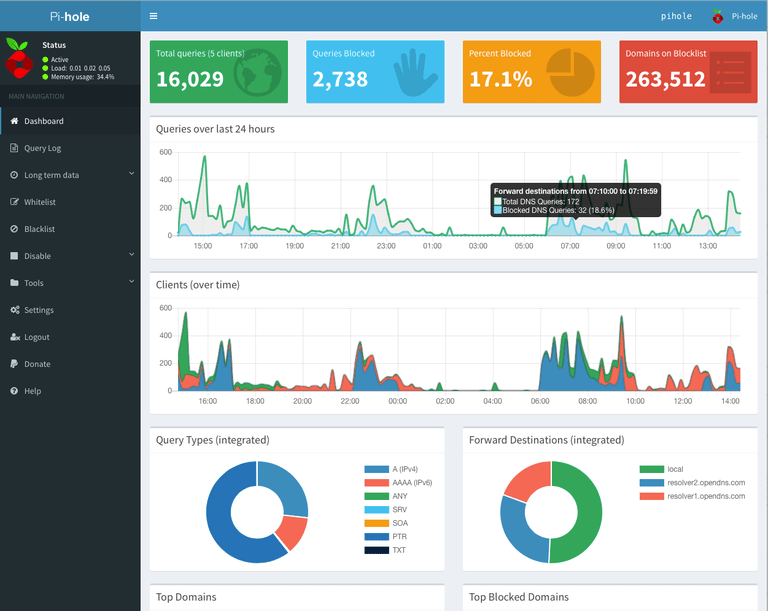

Pi-Hole, Home Network Advertisement Blocker
21 July 2018
Website: Pi-Hole
Install
curl -sSL https://install.pi-hole.net | bashpihole Command
pi@pi-hole ~ $ pihole --help
Usage: pihole [options]
Example: 'pihole -w -h'
Add '-h' after specific commands for more information on usage
Whitelist/Blacklist Options:
-w, whitelist Whitelist domain(s)
-b, blacklist Blacklist domain(s)
-wild, wildcard Blacklist domain(s), and all its subdomains
Add '-h' for more info on whitelist/blacklist usage
Debugging Options:
-d, debug Start a debugging session
Add '-a' to enable automated debugging
-f, flush Flush the Pi-hole log
-r, reconfigure Reconfigure or Repair Pi-hole subsystems
-t, tail View the live output of the Pi-hole log
Options:
-a, admin Admin Console options
Add '-h' for more info on admin console usage
-c, chronometer Calculates stats and displays to an LCD
Add '-h' for more info on chronometer usage
-g, updateGravity Update the list of ad-serving domains
-h, --help, help Show this help dialog
-l, logging Specify whether the Pi-hole log should be used
Add '-h' for more info on logging usage
-q, query Query the adlists for a specified domain
Add '-h' for more info on query usage
-up, updatePihole Update Pi-hole subsystems
-v, version Show installed versions of Pi-hole, Admin Console & FTL
Add '-h' for more info on version usage
uninstall Uninstall Pi-hole from your system
status Display the running status of Pi-hole subsystems
enable Enable Pi-hole subsystems
disable Disable Pi-hole subsystems
Add '-h' for more info on disable usage
restartdns Restart Pi-hole subsystems
checkout Switch Pi-hole subsystems to a different Github branch
Add '-h' for more info on checkout usageUpdate
pihole -upService
sudo service pihole-FTL start | restart | stopWeb Interface

Just point a browser at: http://pi.hole/admin/
From here you play with various settings, add sites to blacklist/whitelist, etc.
Network Setup
I have my Google Wifi (which is my dhcp server) supply my pi-hole with a static address and set it as the default DNS for everything on the network.
Crap!
You can repair things if they go wonky with: pihole -r
When I played around with Pi 3, Pi Zero W, and finally Pi Zero, if I moved the SD card between these pi’s everything but pi-hole worked. There seems to be something HW specific … so I had to do pihole -r to repair it. It could have been something else I did, but I am not sure, I was testing a bunch of stuff to see performance.
If everything is really bad, you can uninstall with: pihole uninstall
Warning
So I originally installed this on a RPi 3 and then moved the SD card to a Pi Zero. The web interface uses Nodejs which is built for ARM7, but the zero is ARM6 so you have to install a suitable node version. I had trouble fixing it, so I uninstalled and reinstalled it.